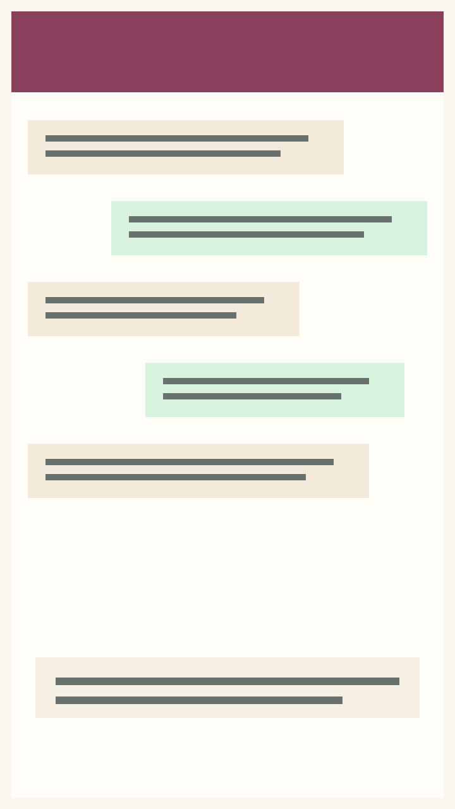
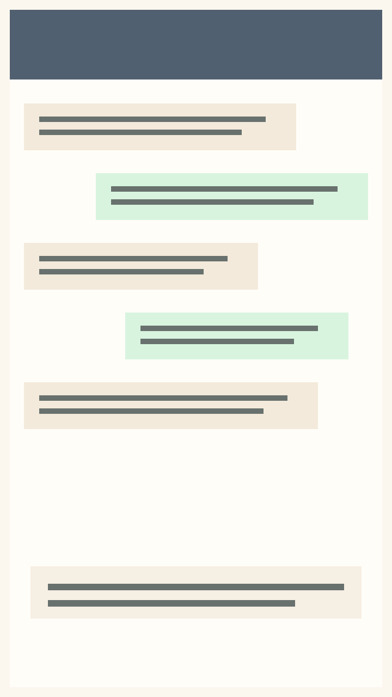

Built for Tiller users
Penny
Chat with your money.
Penny works on top of your trusted Tiller-powered Google Sheet, so your spreadsheet remains the source of truth while everyday money questions become easier to answer from WhatsApp.
The relationship
Tiller organizes your finances. Penny helps you talk to them.
Penny is for people who already trust their spreadsheet. When a question comes up during a grocery run, a family conversation, or a quick check-in away from your computer, Penny makes your existing financial history easier to reach.
How it works
Your spreadsheet stays in charge.
Tiller brings transactions into Google Sheets and helps organize them. Penny reads from that foundation and turns supported spending questions into clear answers through WhatsApp.
Tiller updates your sheet
Your financial data remains organized in the place you already use.
You ask Penny
Send a WhatsApp message when a spending question comes up.
Penny answers from history
Get plain-language answers and transaction breakdowns from your existing data.
Product proof
Financial answers wherever life happens.
Penny is intentionally narrow and useful: spending totals, averages, biggest expenses, merchant lookups, category questions, and transaction breakdowns.
Join beta

Supported questions
Ask the kinds of questions families actually need in the moment.
What did we spend on groceries last month?
What is our average monthly spending over the last six months?
What were our biggest expenses this year?
How much have we spent at Costco this year?
Show me our Costco purchases.
Break that down by transaction.
How much did we spend eating out this month?
What were our five biggest purchases this year?
Before and after
Less digging. More confidence.
Before Penny
You know the answer is probably in your Tiller spreadsheet, but opening, filtering, and analyzing it is not always convenient in the moment.
After talking with Penny
You can answer practical spending questions quickly, feel more informed, and talk about money with your family from a steadier place.
Data and security
Your spreadsheet remains your source of truth.
Penny is designed to answer supported questions from your Tiller-powered Google Sheet. For beta signup, this site collects your first name, email address, and optional Tiller-user status. Financial data access should be handled through scoped Google Sheets credentials on the backend, with secrets stored outside the codebase and signup data kept separate from transaction data.
Early access
Join the Penny beta.
Be among the first Tiller users to try a calmer way to ask your spreadsheet what is happening with your spending.